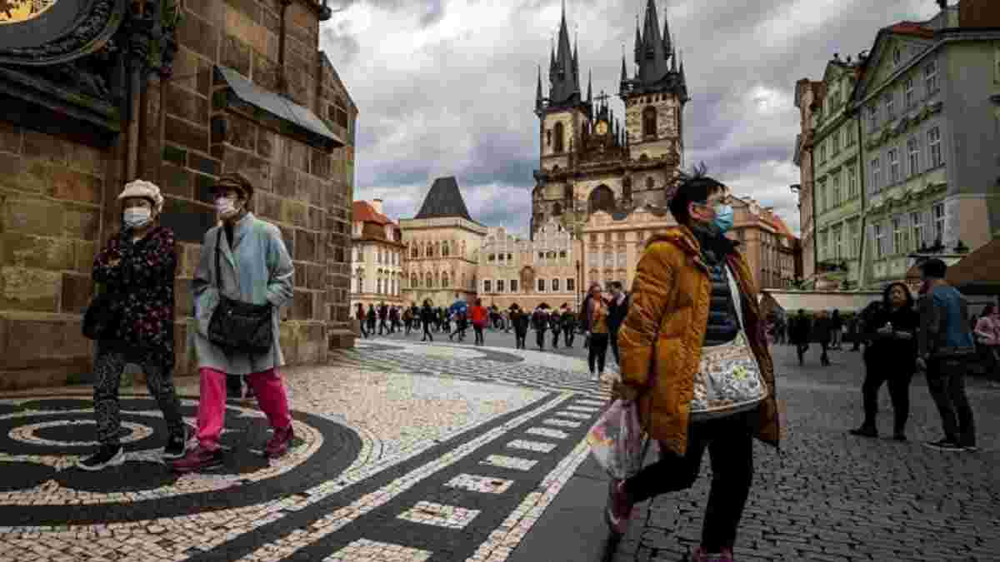
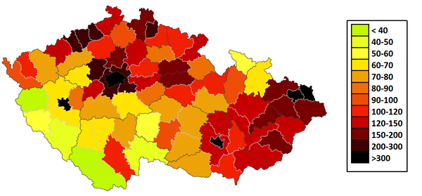

Кількість населення

Кількість населення Чехії
становить близько 10 мільйонів осіб.
Основу населення Чехії (95 %) складають етнічні чехи, що розмовляють чеською мовою. Серед іммігрантів найчисленнішу діаспору в Чехії складають українці. На другому місці знаходяться словаки. На третьому — громадяни В’єтнаму. Слідом за ними йдуть громадяни Росії і Польщі. Інші етнічні групи включають німців, циган і угорців.

Кількість населення Чехії
становить близько 10 мільйонів осіб.
Густота населення країни 2015 року становила 136,5 особи/км² (88-ме місце у світі). Населення країни розподілене досить рівномірно, з більшою густотою в північних і східних регіонах.
